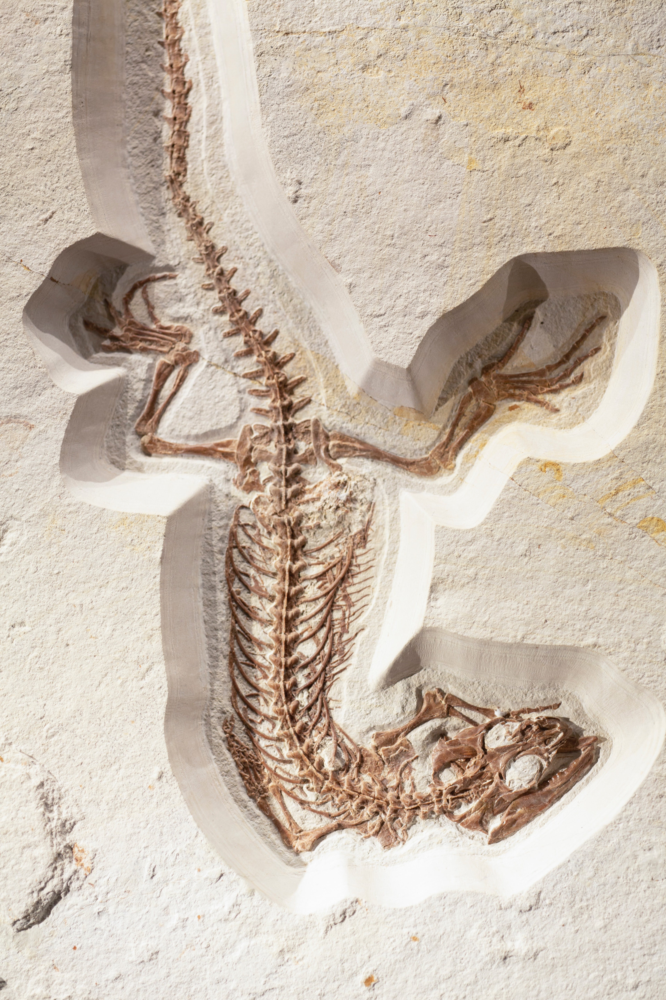
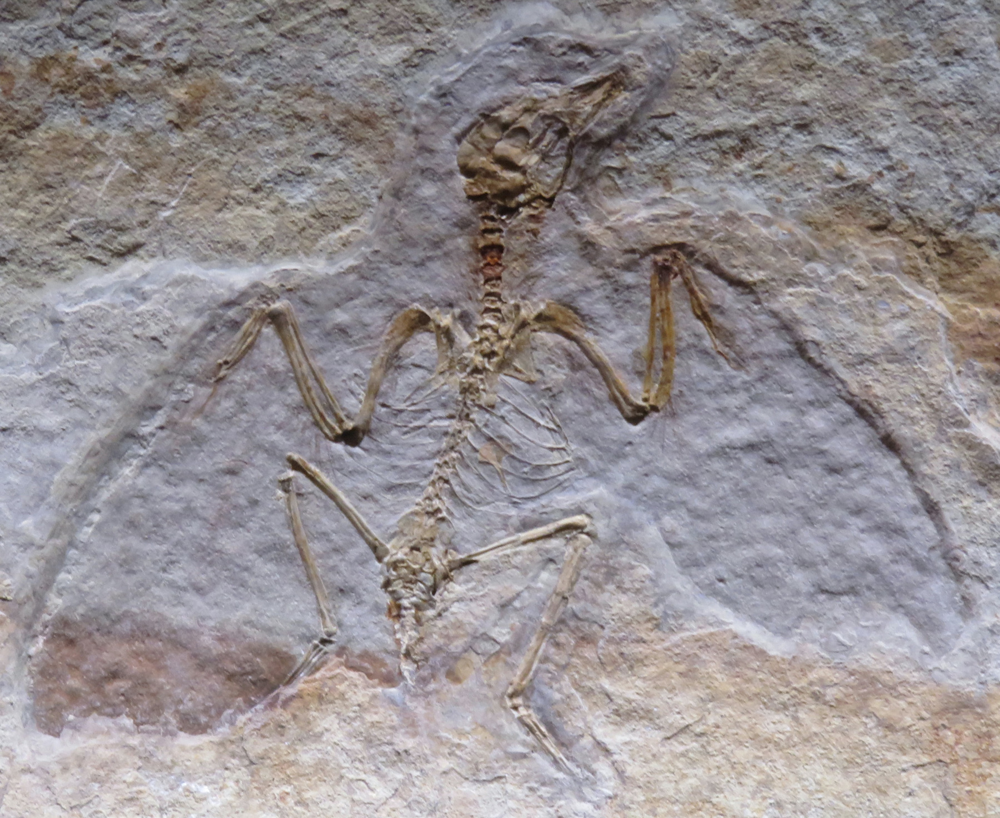
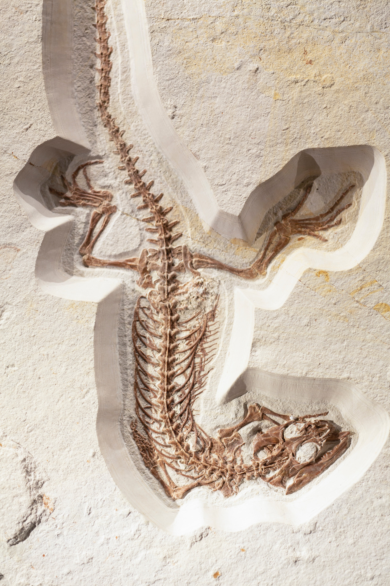
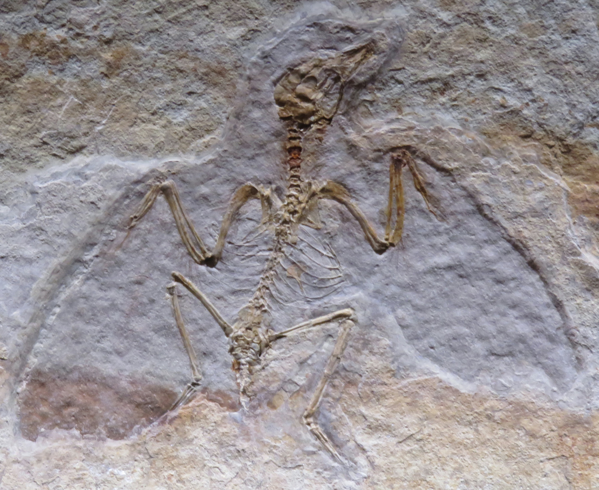

William Le
Fossils are the preserved remains, or traces of remains, of ancient organisms. Fossils are not the remains of the organism itself! They are rocks. A fossil can preserve an entire organism or just part of one. Bones, shells, feathers, and leaves can all become fossils. Fossils can be very large or very small. Microfossils are only visible with a microscope. Bacteria and pollen are microfossils. Macrofossils can be several meters long and weigh several tons. Macrofossils can be petrified trees or dinosaur bones. Preserved remains become fossils if they reach an age of about 10,000 years. Fossils can come from the Archaeaean Eon (which began almost four billion years ago) all the way up to the Holocene Epoch (which continues today). The fossilized teeth of wooly mammoths are some of our most "recent" fossils. Some of the oldest fossils are those of ancient algae that lived in the ocean more than three billion years ago.
The word fossil comes from the Latin word fossus, meaning "having been dug up." Fossils are often found in rock formations deep in the earth. Fossilization is the process of remains becoming fossils. Fossilization is rare. Most organisms decompose fairly quickly after they die. For an organism to be fossilized, the remains usually need to be covered by sediment soon after death. Sediment can include the sandy seafloor, lava, and even sticky tar. Over time, minerals in the sediment seep into the remains. The remains become fossilized. Fossilization usually occur in organisms with hard, bony body parts, such as skeletons, teeth, or shells. Soft-bodied organisms, such as worms, are rarely fossilized. Sometimes, however, the sticky resin of a tree can become fossilized. This is called fossilized resin or amber. Amber can preserve the bodies of many delicate, soft-bodied organisms, such as ants, flies, and mosquitoes.
Most fossils are of marine animals as the seabed is the ideal place for layers of sediment to build up over a dead animal. It takes thousands and sometimes millions of years for a fossil to form. Fossils are forced up to the surface when tectonic plates collide, when ice sheets melt or can be pushed up as new rock form beneath them. The Latin word fossilis means dug up. Fossilised animal poo is called coprolite and is very useful as it give clues to what animals ate. Weathering and erosion of layers of rock also allow fossils to be found. Dinosaur fossils have been found on every continent.
Experience
Teacher
• Ran sessions to help students learn how to excavate
• Reviewed and graded student excavating projects
• Gave examples on fossil excavation
• Taught about fossils
Education
UC California
University of California
University of California
Portfolio



 